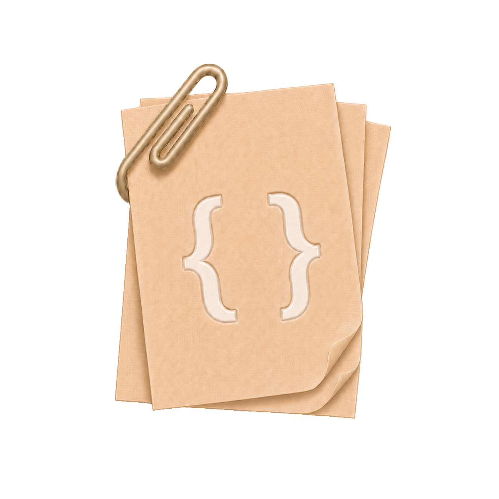
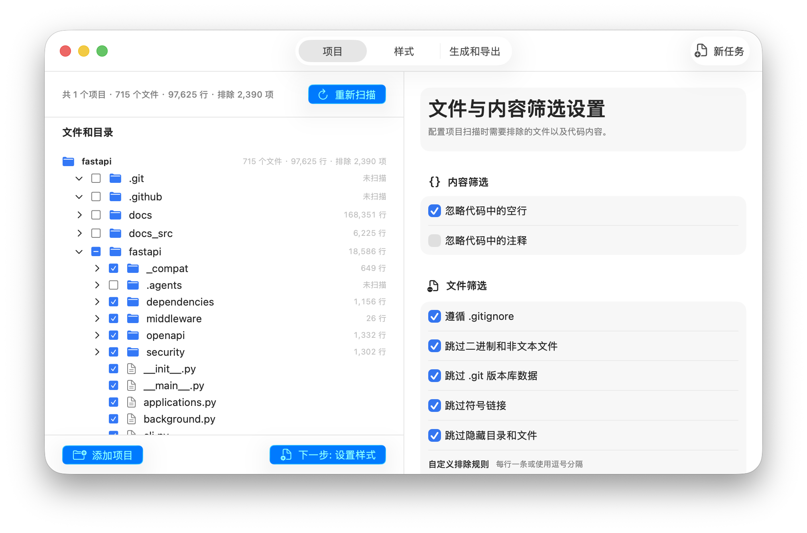
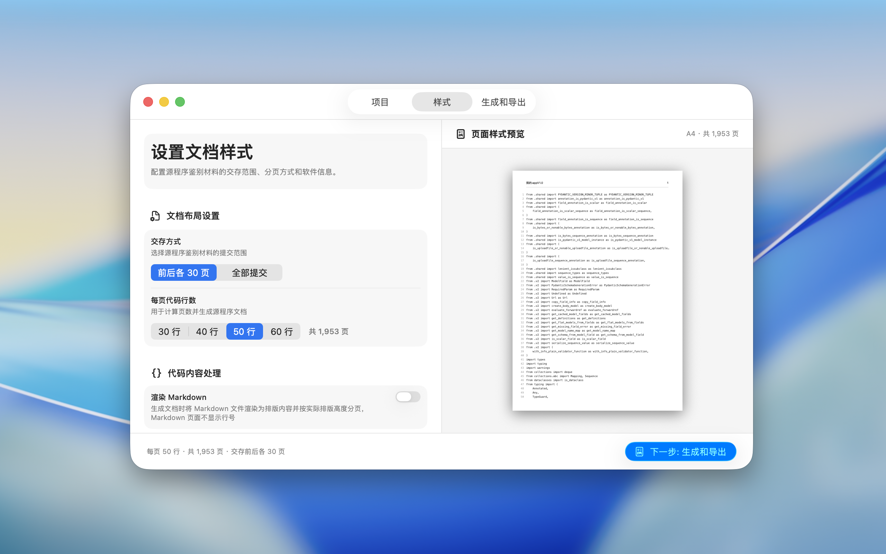
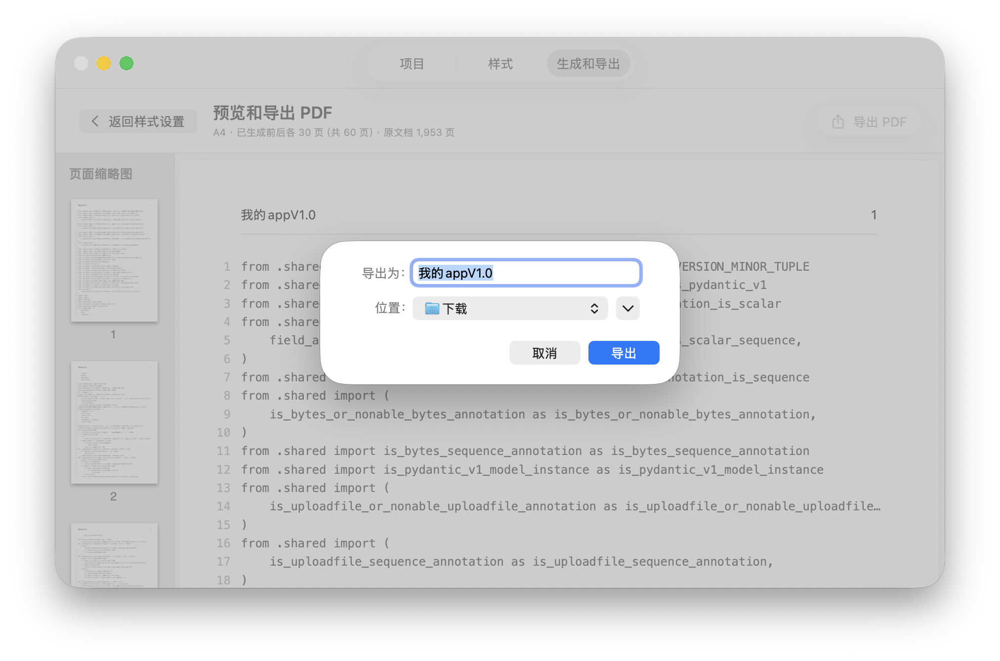
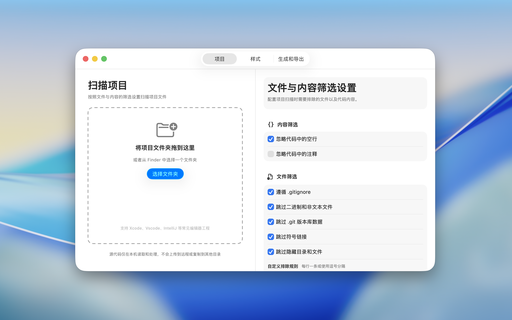

选择项目
拖入项目文件夹，应用自动读取目录与源码。

软助手为 macOS 打造
从项目扫描、内容筛选到 PDF 导出，
一次完成，全程留在你的 Mac。
无需账户 · 无广告 · 无追踪
专注一件事
软助手 将繁琐的材料整理流程收进一个清爽、直观的 macOS 应用。
扫描项目
快速读取项目结构，统计文件与代码行数。支持 Xcode、VS Code、IntelliJ 等常见编辑器工程。


设置样式
设置交存范围、每页代码行数和 Markdown 渲染方式，页面预览会随设置同步更新。

Privacy by design
扫描、筛选、生成与预览全部在设备本地完成。没有账户、广告、行为分析，也没有远程上传。
阅读隐私政策简单三步
拖入项目文件夹，应用自动读取目录与源码。
筛选内容、设置交存范围和文档排版。
预览生成结果，保存到你选择的本地位置。
产品一览
遵循 macOS 的交互习惯，界面清晰，操作自然。
